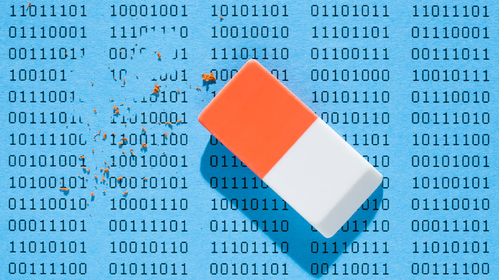
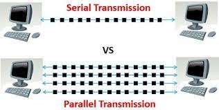
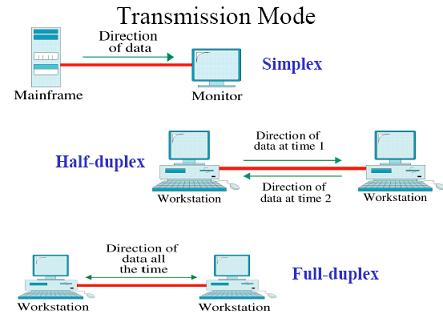

༼ つ ◕_◕ ༽つ Welcome to my Computer Science revision webpage, feel free to use this for your revision and have a nice day. ༼ つ ◕_◕ ༽つ
Data Transmission
The process of sending data from one digital device to another.
Interference
Disturbances that can prevent the successful transmission of data.

USB = Universial Serial Bus
An example of parallel data transmission, uses multiple wires to transmit multiple bits of data at the same time.
The 2 ways of Data Transmission
Single Data Transmission: Uses one wire to transmit bits, can transmit over long distances, transmitted one bit at a time
Parallel Data Transmission: Uses mulitple wires to transfer multiple bits at the same time, significantly faster than single data transmission, need more wires and is more expensive, a bigger chance of errors occuring

Simplex, duplex and half duplex transmission
Simplex: One device is used to transmit and one device can only receive (like a one way street), e.g. Keyboard and traditional monitors
Half-duplex: Both devices can transmit and receive messages, but only one device can transmit at one time, e.g. Walkie-Talkies
Duplex: Both devices can transmit and receive messages, and both can transmit and recieve simultaneously, e.g. Telephone Network (both people can talk and listen at the same time).
